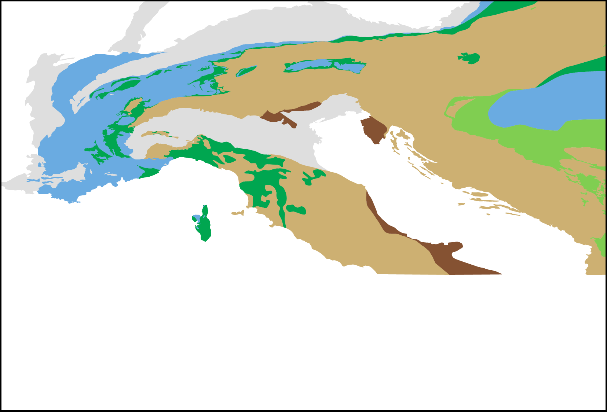
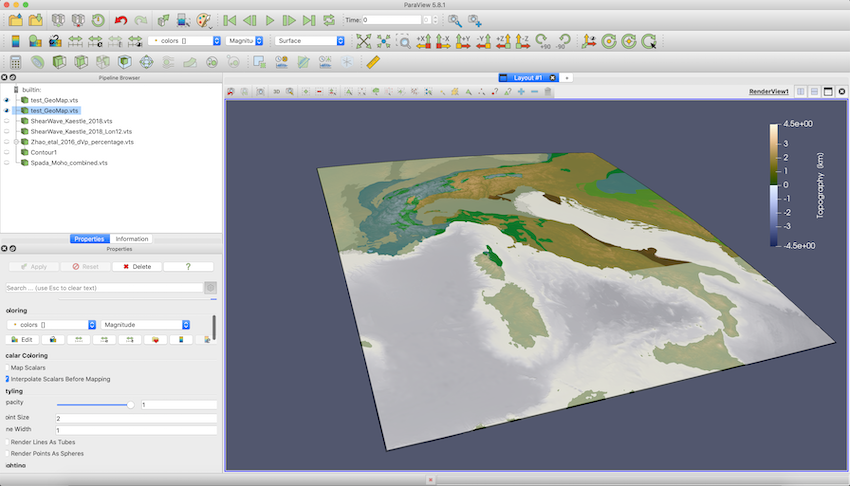

Extract ETOPO1 topographic data using GMT.jl and drape a geological map on top of the topography (given as raster graphics)
Goal
In many cases, we want to add topographic data as well a information about tectonic units to our visualization. This tutorial shows how to use GMT.jl to import data from an ETOPO1 file for a certain region, load a geological map from a raster graphics file (here: PNG), drape it over the topography and transfer that.
It may be tricky to get GMT.jl installed and working correctly on your system (at least until someone prevides a BinaryBuilder package for julia, that is). You first need to have a working version of GMT on your system and only after that, you can install GMT.jl. See the installation instructions on their webpage for details. On a MacBook Pro, a tested procedure to install GMT and to make it work with julia is to directly install the binaries for Julia, GMT (and possibly Ghostscript) and not use any package manager (such as spack or homebrew).
Steps
1. Download topographic data and tectonic maps of the Alpine region
The ETOPO1 data file used in this example can be downloaded here: https://ngdc.noaa.gov/mgg/global/global.html. For this example we downloaded ETOPO1Iceg_gmt4.grd and stored it directly in the folder where we will be working. For the geological map, we download the data from the SPP 4DMB repository and extract the zip file (also in the current folder). In this data set, a gmt file with the data for different tectonic units is given in ./ tectonicmaps4dmb20200917/GMTexample/alcapadi_polygons.gmt .
2. Create a tectonic map with orthogonal projection
To create a png with an orthogonal map projection (which we need for the png import), we do the following in julia:
julia>
julia> using GMT
julia> filename_gmt = "./tectonic_maps_4dmb_2020_09_17/GMT_example/alcapadi_polygons.gmt"
julia> plot(filename_gmt,region="4/20/37/49",show=true)This opens a window with the plotted map. Save this image in your current working folder. Open it with a image manipulation of your choice (e.g. GIMP) and crop it to the map itself. Save the cropped image in your current working directory. For this tutorial, we have named the cropped png file tectonicmap_SPP.png. It looks like this:

3. Import data to paraview
Now, to import the ETOPO1 topography data and to drape the geologic map over it, open julia again. Load the following packages:
julia> using GMT, NearestNeighbors, GeoParams, GeophysicalModelGeneratorFirst, define the filenames of the files you want to import:
julia> filename_topo = "./ETOPO1/ETOPO1_Ice_g_gmt4.grd"
julia> filename_geo = "./tectonicmap_SPP.png"Next, define the region that you want to visualize (note that we use the same coordinates here as we used previously for the generation of the geological map):
julia> lat_min = 37.0
julia> lat_max = 49.0
julia> lon_min = 4.0
julia> lon_max = 20.0and import the data
julia> G = gmtread(filename_topo, limits=[lon_min,lon_max,lat_min,lat_max]);
Lon,Lat,Depth = LonLatDepthGrid(G.x[1:end],G.y[1:end],0);
numel_topo = prod(size(Lon));
Depth[:,:,1] = 1e-3*G.z';
DataTopo = GeophysicalModelGenerator.GeoData(Lon, Lat, Depth, (Topography=Depth*km,))At this step, only the topographic data is imported. Now we have to import the tectonic map from the png file. To do so, first define the longitude and latitude of the lower left and upper right corner of the png (as we create:
julia> Corner_LowerLeft = ( lon_min, lat_min , 0.0)
julia> Corner_UpperRight = (lon_max, lat_max , 0.0)and import the png file with the GMG function ScreenshotToGeoData:
julia> DataPNG = Screenshot_To_GeoData(filename_geo, Corner_LowerLeft, Corner_UpperRight)The tricky part is then to interpolate the colors from the geological map to the topography. Here, we simply use nearesat neighbor interpolation (NearestNeighbors.jl) to do so. First, we have to set up the KDTree and determine the nearest neighbors of the points in our Lat/Lon grid
julia> coord = [vec(DataPNG.lon.val)';vec(DataPNG.lat.val)'];
julia> kdtree = KDTree(coord; leafsize = 10);
julia> points = [vec(Lon)';vec(Lat)'];
julia> dx,dist = nn(kdtree, points);Once this is done, the respective colors have to be assigned to a field in the DataTopo structure:
julia> red = zeros(size(Depth));
julia> green = zeros(size(Depth));
julia> blue = zeros(size(Depth));
julia> tmp = DataPNG.fields.colors[1];
julia> red[1:numel_topo] = tmp[idx];
julia> tmp = DataPNG.fields.colors[2];
julia> green[1:numel_topo] = tmp[idx];
julia> tmp = DataPNG.fields.colors[3];
julia> blue[1:numel_topo] = tmp[idx];Finally, to avoid artefacts, all colors outside the region described by the tectonic map are set to white:
julia> ind_tmp = Lat .< Corner_LowerLeft[2];
julia> red[ind_tmp] .= 1;
julia> green[ind_tmp] .= 1;
julia> blue[ind_tmp] .= 1;
julia> ind_tmp = Lat .> Corner_UpperRight[2];
julia> red[ind_tmp] .= 1;
julia> green[ind_tmp] .= 1;
julia> blue[ind_tmp] .= 1;
julia> ind_tmp = Lon .< Corner_LowerLeft[1];
julia> red[ind_tmp] .= 1;
julia> green[ind_tmp] .= 1;
julia> blue[ind_tmp] .= 1;
julia> ind_tmp = Lon .> Corner_UpperRight[1];
julia> red[ind_tmp] .= 1;
julia> green[ind_tmp] .= 1;
julia> blue[ind_tmp] .= 1;4. Save
Transforming the to Paraview is now a piece of cake:
julia> Data_set = GeoData(Lon, Lat, Depth, (Topography=Depth*km,colors=(red,green,blue)))
julia> Write_Paraview(Data_set, "test_GeoMap")The result is shown here:

In case you are interested: we are employing the oleron scientific colormap from Fabio Crameri's scientific colormap package here.